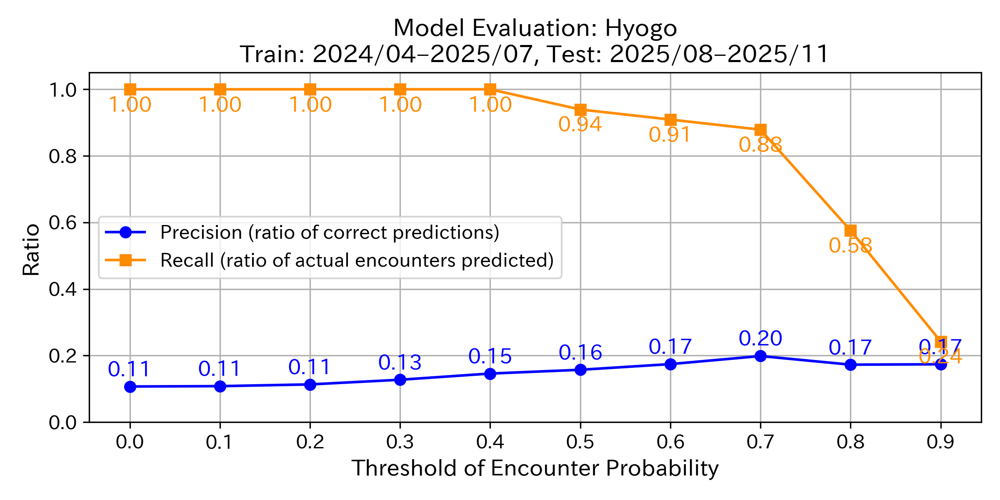
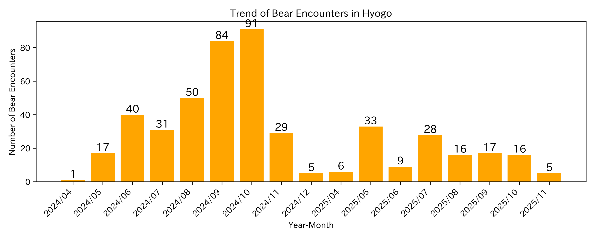

This map uses an AI model developed by the Fukazawa Laboratory at Sophia University
to predict bear encounter probabilities across Hyogo based on local data.
The X marks on the map indicate locations where recent bear encounters have occurred.
The gradient markers from red to yellow show the probability of bear encounters estimated by AI. The closer the color is to red, the higher the encounter risk.
Each marker does not represent a precise point but the probability of an encounter in the surrounding area. Markers are placed at the center of 1 km grid cells.
Areas without markers are excluded from prediction due to insufficient data. Please note that no encounter estimation has been made for those areas.
This map is created solely for awareness and caution purposes. Always prioritize official information and the latest local updates from your municipality.
Which color markers should I be most cautious about?
To avoid missing areas where bear encounters are likely to occur, we recommend exercising caution not only around “High” areas but also around markers labeled as “Moderately High” or, in some municipalities, “Possible.”
Please refer to the next question for a detailed explanation.
Of course, even in areas labeled as “Low,” it does not mean that encounters will never happen.
Always prioritize and check the latest information provided by your local government.
How accurate is this prediction map?
Even if a marker is yellow or light in color, it does not guarantee that bears will not appear there. Likewise, a red marker does not mean a 100% chance of an encounter.
The accuracy of the AI-based bear encounter prediction model is measured using two key metrics: precision and recall.
Precision indicates the proportion of correctly predicted bear encounter locations among all locations predicted as “bear encounter.”
For example, if there are 300 markers labeled “Very High” on the map and actual encounters occurred at 150 of those locations, the precision would be 150 ÷ 300 = 0.5 (50%).
Recall represents the proportion of correctly predicted encounters among all actual encounter locations.
For instance, if there were 200 actual encounter points (marked with X), and 150 of them were predicted as “Very High,” the recall would be 150 ÷ 200 = 0.75 (75%).
The encounter probability is expressed as a value between 0 and 1:
“Very High” = 0.8–1.0, “High” = 0.6–0.8, “Moderately High” = 0.4–0.6, “Possible” = 0.2–0.4, and “Low” = 0.0–0.2.
As shown in the graph below, focusing only on the “Very High” range (around 0.8 on the graph) increases precision but decreases recall (more missed encounters).
To minimize missed encounters, we recommend being cautious even in areas with “Moderately High” (around 0.4) or, depending on the municipality, “Possible” (around 0.2) risk levels.
Again, even areas labeled “Low” do not guarantee zero risk. Always check the latest updates from your local government first.

How much have bear encounters increased?
This bar chart shows the number of bear encounters in Hyogo over the past three years, aggregated by month.

Technical References:
This map is based on the following publications: 1. Shin Nakamoto & Yusuke Fukazawa. “Bear warning: predicting encounters using temporal, environmental, and demographic features.” International Journal of Data Science and Analytics (2025): 1–19. Link 2. Shin Nakamoto & Yusuke Fukazawa. “Developing a bear encounter prediction model and analyzing feature importance in Akita Prefecture.” IPSJ National Convention, 2025. Link 3. Shin Nakamoto & Yusuke Fukazawa. “Predicting human injuries caused by bears using large language models.” JSAI Annual Conference, 2024. Link
Unauthorized copying or redistribution of this map or its contents is prohibited.
For inquiries or permission requests, please contact: fukazawa [at] sophia.ac.jp